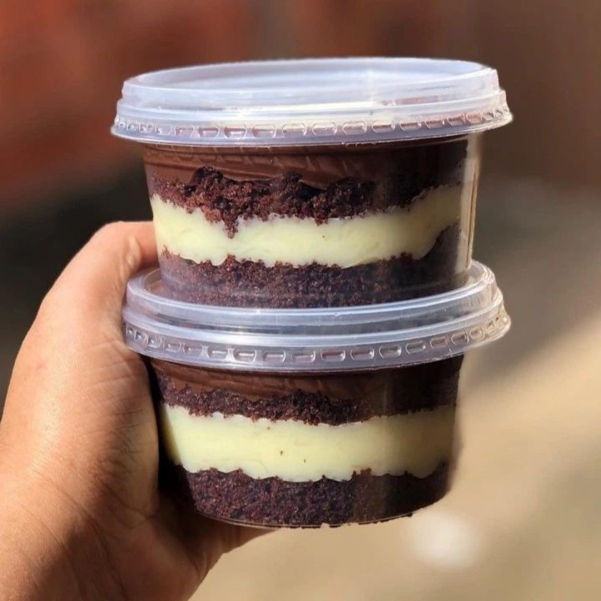
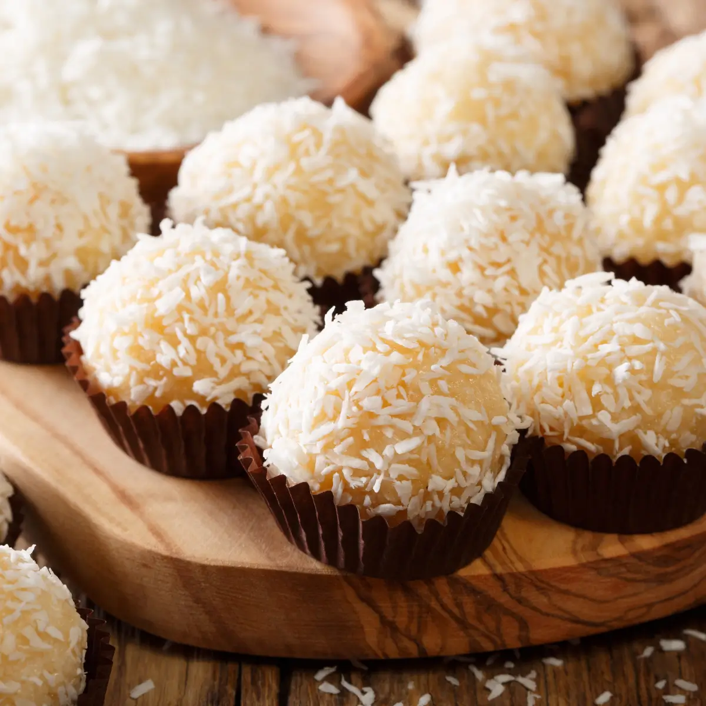
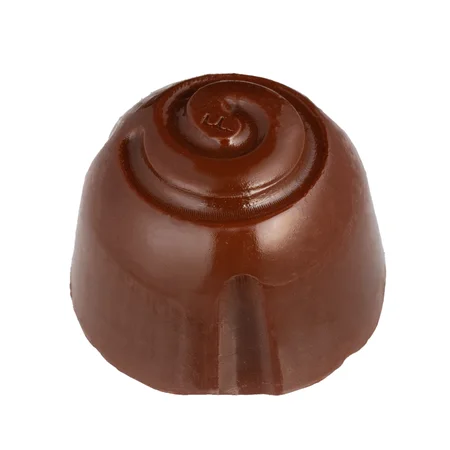
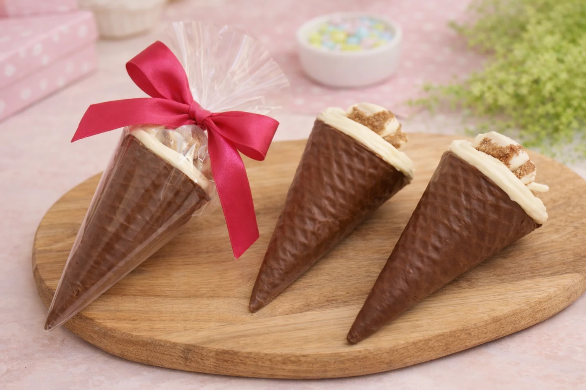
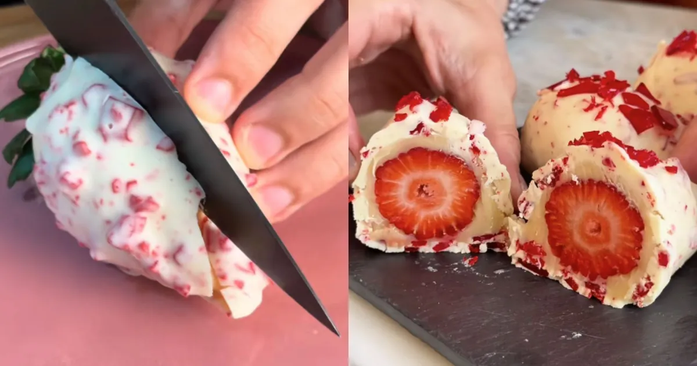
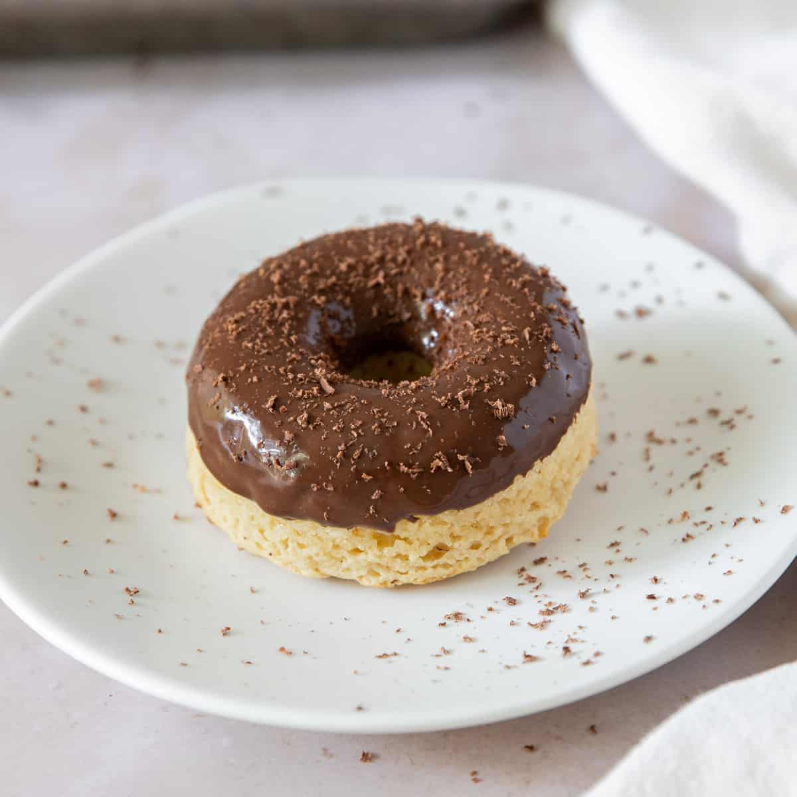

Bolo Vulcão
Bolo fofinho com uma generosa calda de chocolate.
R$ 50,00CONFEITARIA ARTESANAL · BARRA DA TIJUCA
"Localizada no Città America, na Barra da Tijuca, a Doceria Da Barra é o destino ideal para quem busca doces artesanais, tortas variadas, salgados fresquinhos e um café especial para acompanhar."
DESCOBRIR NOSSOS DOCESFEITOS COM CARINHO, PARA COMPARTILHAR
Bolo fofinho com uma generosa calda de chocolate.
R$ 50,00Crocantes, com açúcar e canela na medida certa.
R$ 10,00Cremoso, feito com chocolate e um toque de carinho.
R$ 5,00
Bolo de pote com recheio de chocolate e cobertura de granulado.
R$ 15,00
Doce tradicional brasileiro, feito com leite condensado e coco.
R$ 5,00
Trufa deliciosa, feita com chocolate e uma pitada de sal.
R$ 10,00
Cone recheado com trufas e coberto com chocolate.
R$ 20,00
Morango fresco empanado e coberto com chocolate.
R$ 9,00
Rosquinha crocante e saborosa, perfeita para um lanche.
R$ 15,00A NOSSA HISTÓRIA
A Doceria da Barra nasceu da paixão pela confeitaria artesanal e do desejo de espalhar doçura pela rotina. Cada bolo, brigadeiro e sobremesa é feito à mão com ingredientes selecionados e muito carinho.
Mais do que vender doces, queremos adoçar encontros, celebrar conquistas e transformar cada pausa em um momento especial.
VAMOS ADOÇAR O SEU DIA?
Av. das Américas, 700 · Barra da Tijuca, Rio de Janeiro
(21) 2456-1955
contato@doceriadabarra.com
FALE COM A GENTE